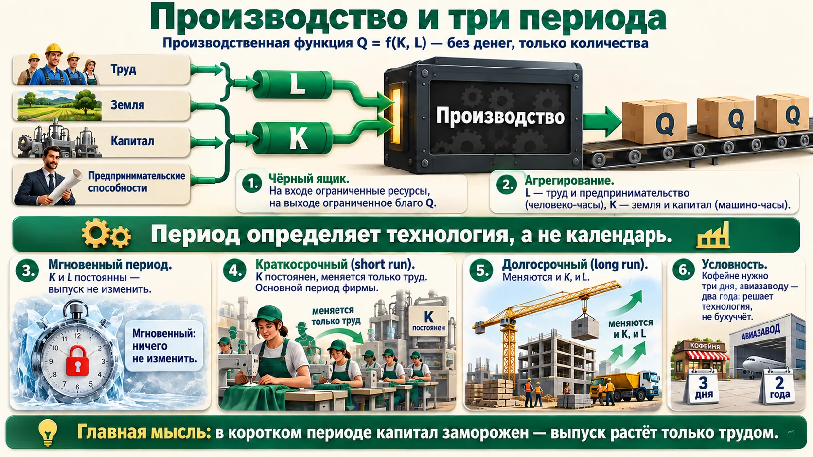
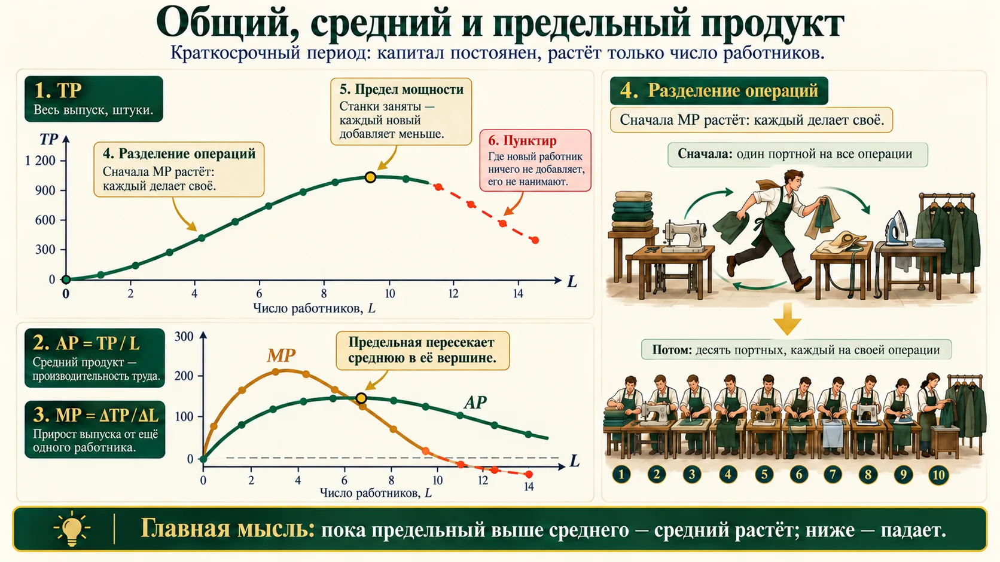
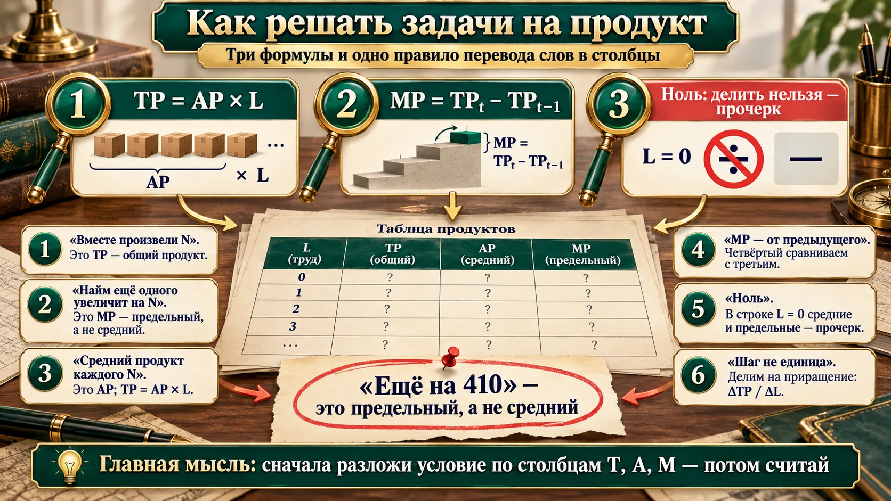
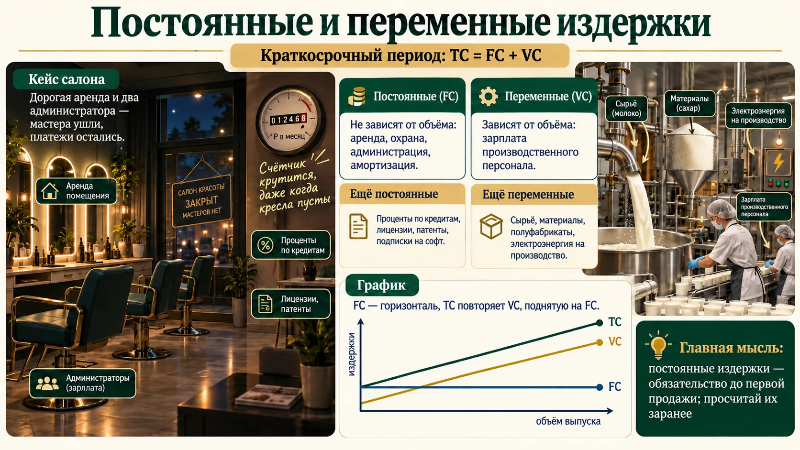
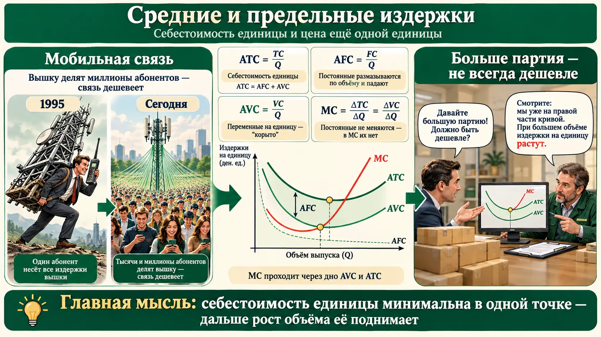
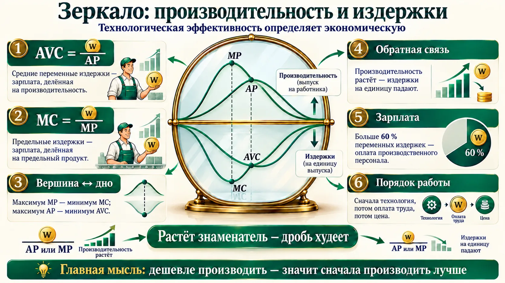
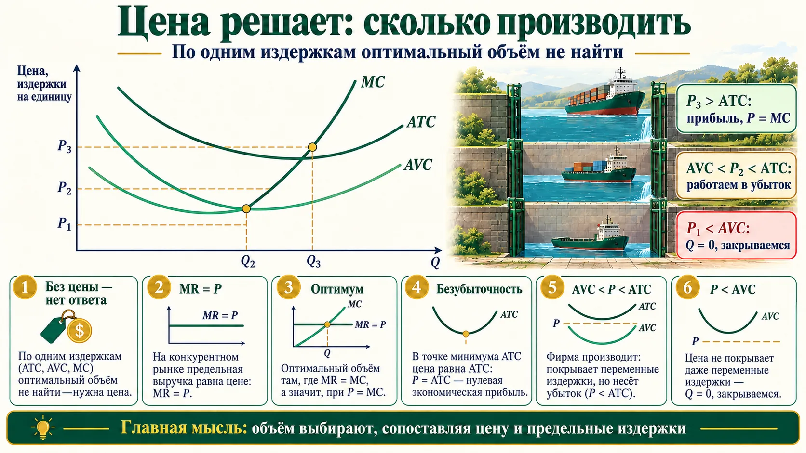
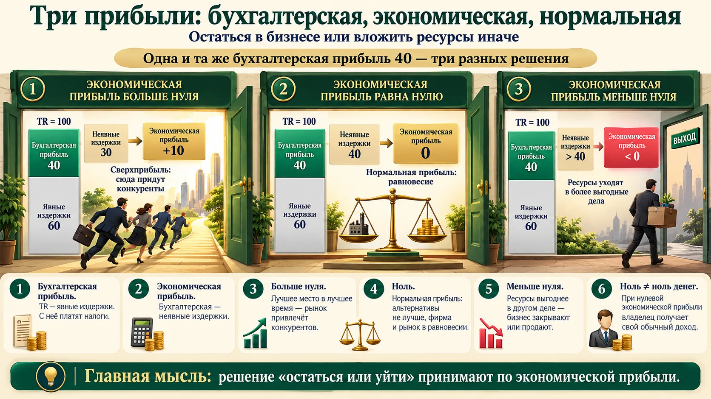
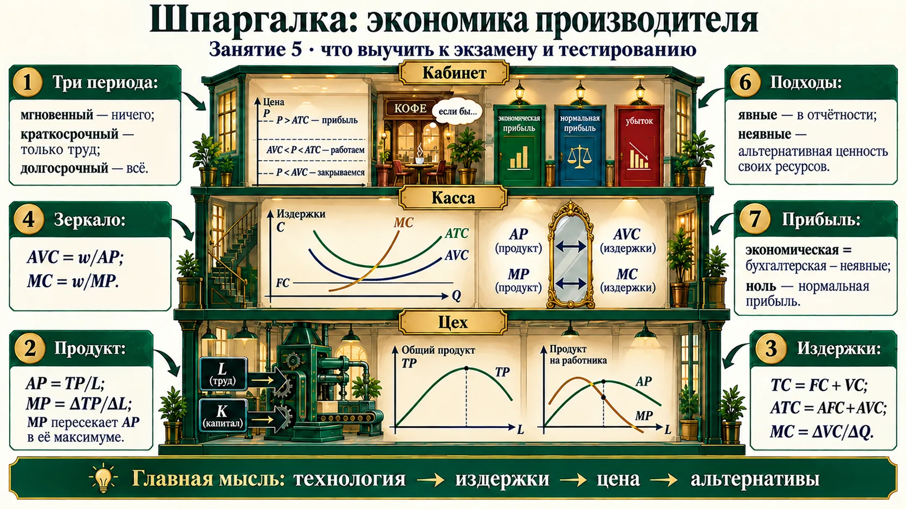

Фирма: прибыль, три процесса, три типа величин
Повторение прошлого занятия — каркас, на который ляжет весь практикум.
| Тип величин | Буква | Смысл | Пример |
|---|---|---|---|
| Общие (совокупные, валовые) | T — total | масштаб процесса целиком | TP, TC, TR |
| Средние | A — average | на единицу ресурса или продукта | AP = TP / L, ATC = TC / Q |
| Предельные (дополнительные) | M — marginal | что даёт ещё одна единица | MP = ΔTP / ΔL, MC = ΔTC / ΔQ |
🧭 «Настоящий экономист мыслит предельными величинами»
Это один из десяти принципов экономики Н. Грегори Мэнкью: «рациональные люди мыслят в предельных величинах». Решение «ещё одной смены», «ещё одной партии» принимают, сравнивая дополнительную выгоду с дополнительными затратами, а не средние показатели за год. Именно равенство предельного дохода и предельных издержек (MR = MC) даёт максимум прибыли — закон 21 в реестре законов.
Производство: чёрный ящик и три периода
Первый процесс — технология. Здесь ещё нет денег: только сколько ресурсов вошло и сколько продукта вышло.

| Период | Что можно изменить | Пример с лекции |
|---|---|---|
| Мгновенный | ничего: K и L постоянны, выпуск постоянен | кофейне нужно три дня на закупку, авиазаводу — два года на новые самолёты |
| Краткосрочный (short run) | только переменный фактор — труд; K = const | швейная фабрика в аудитории: людей добавляют, пока не заняты все машины в три смены |
| Долгосрочный (long run) | всё: и K, и L (двухфакторная функция) | новое помещение, оборудование, новые сотрудники |
Период — это не календарь
- Деление на периоды условное и зависит от технологии, а не от бухгалтерского учёта. Короткий период не равен «году», длинный — «пяти годам».
- Short run — основной период деятельности фирмы. Дальше всё — о нём: «везде указывайте, что речь о краткосрочном периоде».
- TP (произведено) и Q (продано) в жизни различаются, в простых моделях их считают одним и тем же.
Общий, средний и предельный продукт
Три графика, на которых держатся задачи экзамена: «в первую очередь будут спрашивать технологическую и экономическую эффективность фирмы».

- Ускоренный рост: сначала один работник обходит все станки и делает все операции; потом операции делят на двоих, троих, при 10 операциях каждый занят своим — интенсификация максимальна (L₀ работников). MP растёт.
- Замедление: людей добавляют до полной загрузки станков (три смены, 24 часа); каждый новый даёт меньше. MP падает.
- Спад — пунктиром: «его, по сути, нет». Таких людей не нанимают: «мы им будем зарплату платить, а они ничего не создают».
🧭 Почему пересечение — именно в вершине
Средняя оценка в классе растёт, если новый ученик пишет лучше среднего, и падает, если хуже. Предельный работник — «новый ученик». Пока его вклад выше среднего, AP растёт; ровно в момент, когда вклад сравнялся со средним, рост останавливается — это и есть вершина AP. То же верно для издержек: MC пересекает AVC и ATC в их минимумах (раздел 6).
Практикум: задачи на продукт
Задания 1 и 2 раздаточного листа — «такую задачу вы, возможно, увидите на экзамене». Сначала решите сами, потом откройте разбор. Картинка с приёмами — после задач.
Заполните AP и MP
| L, чел.-ч | 0 | 1 | 2 | 3 | 4 | 5 | 6 | 7 | 8 |
|---|---|---|---|---|---|---|---|---|---|
| TP, шт. | 0 | 4 | 6 | 9 | 10 | 10,5 | 10,7 | 10,8 | 10,8 |
| AP | ? | ? | ? | ? | ? | ? | ? | ? | ? |
| MP | ? | ? | ? | ? | ? | ? | ? | ? | ? |
Строку TP восстановили по ответам, продиктованным на занятии: фото раздаточного листа нет.
Ответ и разбор
AP = —, 4, 3, 3, 2,5, 2,1, 1,78, 1,54, 1,35. MP = —, 4, 2, 3, 1, 0,5, 0,2, 0,1, 0.
Столбец L = 0 преподаватель предложила дописать самим: «ноль имеет концептуальное значение». В нуле AP и MP — прочерк: на ноль не делим. MP всегда считают от предыдущей позиции: MP₄ = (10 − 9) / (4 − 3) = 1. Если шаг не единица, делим на приращение: MP = (TPₜ − TP₀) / (Lₜ − L₀).
8, 9, 10 и 11 работников
8 работников вместе производят 4000 единиц продукции, 9 — 4590. Найм 10-го увеличит производство ещё на 410. Если фирма наймёт 11 работников, средний продукт каждого составит 490. Найдите TP, AP и MP для всех четырёх случаев.
Ответ и разбор
| L | 8 | 9 | 10 | 11 |
|---|---|---|---|---|
| TP | 4000 | 4590 | 5000 | 5390 |
| AP | 500 | 510 | 500 | 490 |
| MP | — (нет данных о 7) | 590 | 410 | 390 |
Главное — перевести слова в столбцы. «Вместе произвели» — TP. «Найм 10-го увеличит ещё на 410» — это предельный продукт, а не средний: «средний — это было бы: каждый из 10 делает 410». TP₁₀ = 4590 + 410 = 5000. «Средний продукт каждого 490» — AP, значит, TP₁₁ = 490 × 11 = 5390, MP₁₁ = 5390 − 5000 = 390.

Сокращение штата — тоже задача на MP
Слушатель на занятии: «У меня как раз сейчас увольнение сотрудников, оптимизация». Вопрос руководителя — не «сколько в среднем делает человек», а «на сколько упадёт выпуск без последнего нанятого» (его MP). Если MP близок к нулю — сокращение почти не скажется на выпуске. Преподаватель: «Нет ничего практичнее хорошей теории».
Постоянные и переменные издержки
По таблице продукта не скажешь, кто эффективнее: неизвестно, сколько стоит труд. Добавляем цены ресурсов — это и есть издержки.

Производитель мороженого: постоянные или переменные?
- Затраты на покупку молока и сахара.
- Затраты на разработку нового сорта (рецептуры).
- Заработная плата работников цеха.
Ответ и разбор
1 — переменные: больше мороженого — больше молока. 3 — переменные: зарплата производственного персонала растёт с выпуском. 2 — постоянные: рецепт создают или покупают один раз, как лицензию, и делают по нему годами, независимо от объёма. Слушатели спорили, преподаватель закрыла спор: «в моей интерпретации это постоянные».
Ещё два пункта листа в записи неразборчивы; по ответам на занятии оба — постоянные.
Разложите TC на FC и VC
| Q | 0 | 1 | 2 | 3 | 4 |
|---|---|---|---|---|---|
| TC | 60 | 130 | 180 | 230 | 300 |
Ответ и разбор
FC = 60 — «в нулевой ячейке есть 60: ничего не делаем, но издержки есть». VC = TC − FC = 0, 70, 120, 170, 240. AFC = FC / Q = 60, 30, 20, 15 — падает.
Полная таблица: ATC = —, 130, 90, 76,7, 75; AVC = —, 70, 60, 56,7, 60; MC = —, 70, 50, 50, 70. В строке Q = 0 у средних и предельных — прочерк, а не ноль: на ноль не делят. Задания 2–5 этого листа — в домашнем задании.
Салон, который съели постоянные издержки
Мастера ушли с прежнего места вместе с идейной вдохновительницей и открыли свой салон в центре города. Аренда — 90 тысяч в месяц, огромный холл, два администратора, кредиты на оборудование: постоянные платежи 150–170 тысяч. Клиентов привели мастера, но владелица решила, что «это она такая крутая», и ввела регламент: окно в записи — сидите и ждите клиента с улицы. Мастера ушли в арендные кресла, а постоянная часть осталась: «салон хоть принимает клиентов, хоть не принимает — будь любезен, заплати».
Признак — зависимость от объёма, а не регулярность платежа
- Зарплату платят каждый месяц, но зарплата производственного персонала — переменные, а администрации — постоянные.
- Электроэнергия на станки — переменные, на освещение офиса — постоянные.
- На графике FC — горизонталь, TC — копия VC, поднятая на FC.
Средние и предельные издержки
Себестоимость единицы и цена ещё одной единицы. Две истории — про мобильную связь и про Sony.

| Показатель | Формула | Смысл |
|---|---|---|
| ATC (AC) — средние общие | TC / Q = AFC + AVC | себестоимость единицы |
| AFC — средние постоянные | FC / Q | постоянные «размазываются» по объёму и падают |
| AVC — средние переменные | VC / Q | «корыто», парабола ветвями вверх |
| MC — предельные | ΔTC / ΔQ = ΔVC / ΔQ | ΔFC = 0, поэтому в MC постоянных нет |
Почему подешевела мобильная связь
1995 год: «здоровенная труба», обслуживание, по Киму, около 1000 долларов; в «лихие 90-е» телефоны брали напрокат, чтобы произвести впечатление на переговорах. Через 30 лет связь, по словам преподавателя, подешевела примерно на два порядка. Экономическая причина, если отвлечься от технологии: вышку содержат все абоненты, и доля каждого крайне мала — AFC стремится к нулю.
Больше партия — дороже штука
Американские партнёры просят партию в 5000 штук — Морита согласен «по 20». Просят 10 000 и дешевле — он отвечает: «по 25». «С какой стати? По закону спроса чем больше объём, тем ниже цена». А он опирался на кривую своих издержек: фирма рассчитана на объём с минимальной себестоимостью, а за ним себестоимость единицы растёт (разрастается администрация, логистика). Цифры преподаватель «уже не помнит» — важна логика.
🧭 Кто такие Ким и Морита
Игорь Александрович Ким — автор учебника по микроэкономике и коротких видеолекций, на которые опирается преподаватель («очень толковый учебник»).
Акио Морита (1921–1999) — сооснователь Sony (компания основана в 1946 году как Tokyo Tsushin Kogyo), автор книги «Сделано в Японии» (1986) с историями переговоров.
Три частые ошибки
- MC не зависят от FC. Рост аренды поднимает ATC и AFC, но не MC и не AVC.
- MC пересекает ATC в минимуме ATC, а не в своём минимуме. Минимум MC наступает раньше.
- Объём с минимальной себестоимостью — ещё не оптимум. Без цены выбрать объём нельзя (раздел 8).
- По словам преподавателя, Sony тогда была монополистом. Это спорно: в 1950-е Sony была молодой небольшой фирмой, а предложенный ей заказ Bulova на 100 000 радиоприёмников превышал весь её капитал (Wikipedia: Akio Morita). Для логики кейса монополия не нужна: достаточно растущей ветви ATC.
Зеркало: производительность и издержки
Главная мысль занятия: технологическая эффективность определяет экономическую. Это видно и на графике, и в формуле.

«Мы как будто верхний график переворачиваем вниз». Пока операции делятся и производительность растёт, издержки на единицу падают; производительность пошла вниз — издержки вверх. «Если знаменатель растёт, вся дробь сокращается при неизменной зарплате». По словам преподавателя, более 60 % переменных издержек — зарплата производственного персонала. Поэтому сначала — технология, потом оплата труда, потом цена.
От производительности к издержкам
FC = 24. Каждый работник обходится в 6 (w = 6). Продукт: L = 0…7, TP = 0, 1, 3, 6, 10, 13, 15, 16. Найдите AP, MP, VC, TC, AVC, AFC, ATC и MC.
Ответ и разбор
| L | 0 | 1 | 2 | 3 | 4 | 5 | 6 | 7 |
|---|---|---|---|---|---|---|---|---|
| Q | 0 | 1 | 3 | 6 | 10 | 13 | 15 | 16 |
| AP | — | 1 | 1,5 | 2 | 2,5 | 2,6 | 2,5 | 2,29 |
| MP | — | 1 | 2 | 3 | 4 | 3 | 2 | 1 |
| VC | 0 | 6 | 12 | 18 | 24 | 30 | 36 | 42 |
| TC | 24 | 30 | 36 | 42 | 48 | 54 | 60 | 66 |
| AVC | — | 6 | 4 | 3 | 2,4 | 2,31 | 2,4 | 2,63 |
| AFC | — | 24 | 8 | 4 | 2,4 | 1,85 | 1,6 | 1,5 |
| ATC | — | 30 | 12 | 7 | 4,8 | 4,15 | 4 | 4,13 |
| MC | — | 6 | 3 | 2 | 1,5 | 2 | 3 | 6 |
MC делят на приращение объёма, а оно здесь разное — 2, 3, 4…: MC = ΔVC / ΔQ = 6/2 = 3, 6/3 = 2, 6/4 = 1,5. Проверка формулами: AVC = 6 / AP (6 / 2,6 = 2,31), MC = 6 / MP. AP растёт до L = 5 — AVC падает до L = 5; MP максимален при L = 4 — там минимум MC. «Самое лучшее не определим: нет цены».
Снижать себестоимость — через знаменатель
- Урезать зарплату (числитель) — быстро, но люди уходят. Поднять производительность (знаменатель): разделение операций, оснастка, цифровизация — дольше, но дробь худеет надолго.
- Преподаватель экономистов-первокурсников ведёт сначала на производство: «ознакомиться с технологией, а потом подключать деньги».
Цена решает: сколько производить и когда закрываться
Вопрос-ловушка преподавателя — на нём «попались» почти все. Ответьте сами, прежде чем смотреть картинку.
Какой объём лучший — Q₀, Q₁ или Q₂?
На графике издержек отмечены три объёма. При Q₁ себестоимость единицы (ATC) минимальна, при Q₀ и Q₂ — выше. Какой объём вы выберете для своей фирмы?
Ответ
Ни один — пока неизвестна цена рынка. Слушатели ответили «Q₁» и «Q₂» — «ну вот, два вам в семестре поставила». «Вы только свои затраты просчитали. Если цена рынка ниже себестоимости — объём ноль: мы даже сырьё не окупаем». Правильно ответил только один слушатель: нужно MR = MC, а MR на графике нет.

Цена яхты P = 7 млн ₽. Найдите точку безубыточности и объём, максимизирующий прибыль
| Q, шт. в мес. | 0 | 1 | 2 | 3 | 4 | 5 | 6 | 7 | 8 |
|---|---|---|---|---|---|---|---|---|---|
| FC, млн ₽ | 10 | 10 | 10 | 10 | 10 | 10 | 10 | 10 | 10 |
| VC, млн ₽ | 0 | 7 | 12 | 16 | 19 | 21 | 24 | 31 | 41 |
Ответ и разбор
| Q | 0 | 1 | 2 | 3 | 4 | 5 | 6 | 7 | 8 |
|---|---|---|---|---|---|---|---|---|---|
| TC = FC + VC | 10 | 17 | 22 | 26 | 29 | 31 | 34 | 41 | 51 |
| MC = ΔTC / ΔQ | — | 7 | 5 | 4 | 3 | 2 | 3 | 7 | 10 |
| MR = ΔTR / ΔQ | — | 7 | 7 | 7 | 7 | 7 | 7 | 7 | 7 |
| TR = P × Q | 0 | 7 | 14 | 21 | 28 | 35 | 42 | 49 | 56 |
| π = TR − TC | −10 | −10 | −8 | −5 | −1 | 4 | 8 | 8 | 5 |
MR = P = 7: цена не меняется, каждая яхта добавляет 7. Безубыточность — 5 яхт: прибыль впервые становится положительной (при 4 ещё −1). Максимум прибыли — 8 млн, и достигается он при 6 и при 7 яхтах; седьмая яхта — последняя, для которой MR ≥ MC (7 = 7): «там, где MR = MC, по идее, 7». Восьмая уже убыточна: MC = 10 > MR = 7, прибыль падает до 5.
В какой-то час работы ресторан уходит в минус: места не заполнены. Но не закрывается — отпуска, летний период, выходные, праздники окупят. Жёсткий критерий другой: «если на протяжении длительного времени мы не окупаем даже переменную часть — закрываемся».
Порог закрытия — AVC, а не ATC
- Цена ниже ATC, но выше AVC — фирма несёт убыток, но продолжает работать: при закрытии она потеряет все FC, а так — меньше.
- Закрываться — при P < min AVC. В долгосрочном периоде фирма уходит, если P < min ATC.
- Минимум ATC (Q₁) — не оптимальный объём: оптимум определяет пересечение цены и MC.
➕ Дополнение: долгосрочный порог
В долгосрочном периоде постоянных издержек нет — все издержки переменные. Поэтому фирма остаётся на рынке, только если цена покрывает минимум средних общих издержек. На лекции это правило не формулировали; так оно дано у Н. Г. Мэнкью («Принципы экономикс», гл. 14 «Фирмы на конкурентных рынках»).
Бухгалтер и экономист: явные и неявные издержки
Управленческое решение упростим до одного: оставить бизнес или избавиться от него. Для этого бухгалтерских цифр мало.
| Различие | Бухгалтерский подход | Экономический подход |
|---|---|---|
| 1. Какие ресурсы | только пересекающие границу фирмы — внешние | внешние и внутренние |
| 2. Как оценивают | по фактической цене приобретения, точно и количественно | по альтернативной ценности: сколько дало бы лучшее другое использование |
| 3. Где отражаются | в бухгалтерской отчётности по законодательству | нигде: носят вменённый характер, «только в голове предпринимателя» |
Восковые фигуры и «Лукоморье»
Нулевые, ночной поезд. Попутчица возила по городам восковые фигуры — Наташу Ростову, Распутина: бизнес «ни шатко ни валко». А её коллеги подобрали декорации «Лукоморья», выброшенные кукольным театром, повезли леших и ведьм — и привечали детей: «зачем мне Наташа Ростова, если ребёнку пять лет?» Они «срубили много денег». Успех — в способности увидеть возможности, которых не видят другие. Не каждый способен разглядеть спектр альтернатив для ресурсов, которые уже есть в фирме.
🧭 Альтернативные издержки — из занятия 3
Слушатель вспомнил определение: «мера того, что должно быть отдано, чтобы получить желаемое». Преподаватель: «Если мы здесь — мы не дома, и лучшее, что я могла бы делать вместо пары, — щи сварить». Неявные издержки — это альтернативные издержки собственных ресурсов фирмы (закон 9 в реестре).
Посчитайте свою «невидимую зарплату»
- Собственник, который работает в своём бизнесе без зарплаты, кажется «прибыльным». Добавьте к издержкам то, что ему платили бы в найме, и аренду своего помещения — бизнес может оказаться убыточным.
- Сравнивайте альтернативы за одно и то же время и при прочих равных — так преподаватель ответила на вопрос слушателя.
Три прибыли: бухгалтерская, экономическая, нормальная
«Понять, что такое нормальная прибыль, — высший пилотаж понимания разницы подходов». Таблицу преподаватель взяла у коллег с кафедры.

| Сценарий (TR 100, явные 60, бух. прибыль 40) | Неявные | Экономическая прибыль | Решение |
|---|---|---|---|
| «Попал в струю»: первым купил станок для масок, нашёл «Лукоморье» | капитал 20 + труд 10 = 30 | +10 | «лучшее место в лучшее время», сверхприбыль — но на рынок придут конкуренты |
| Конкуренты повторили, его зовут на хорошую зарплату | 20 + 20 = 40 | 0 | нормальная прибыль: фирма и рынок в равновесии — «к нам никто не ломится, и мы никуда не уйдём» |
| Стоматология подруги: место на кафедре, деньги от продажи — в недвижимость | 20 + 30 = 50 | −10 | ресурсы уходят: клинику продали |
Цифры — со слайдов преподавателя «Бухгалтерский и экономический подход к издержкам и прибыли». Экономические издержки в трёх сценариях: 90, 100 и 110.
Нулевая экономическая прибыль — не ноль денег
- При нулевой экономической прибыли владелец получает свои 40 — ровно столько, сколько его ресурсы дали бы в лучшей альтернативе. Это и есть нормальная прибыль.
- В учебниках: нормальная прибыль — минимальный доход, удерживающий предпринимателя в деле; она входит в неявные издержки.
- Бухгалтерская прибыль ≥ экономической всегда (неявные издержки не бывают отрицательными).
- Положительная бухгалтерская прибыль не означает, что бизнес стоит продолжать: смотрят на экономическую.
- Где увидеть неявные издержки конкурентов? Нигде: никто не покажет отчётность. Конъюнктуру оценивают косвенно — по тенденциям, своей выручке, публикациям в телеграм-каналах.
- Почему клинику кто-то купил, если она невыгодна? Оценка внутренних ресурсов у покупателя другая: у него нет таких альтернатив трудоустройства.
Уровень управленца — в умении видеть альтернативы
Бухгалтерский учёт сейчас во многом автоматизирован, и хороший бухгалтер — ценность. Но «понимание того, какие существуют альтернативы для вложения ресурсов, как раз показывает уровень экономиста как управленца — человека, способного увидеть спектр возможностей и применить их».
Домашнее задание
Тест «Издержки производства и их учёт в управленческих решениях. Максимизация прибыли фирмы»: суждения «верно/неверно», вопросы с одним и несколькими ответами, пять задач. Плюс задания 2–5 листа «Издержки производства в краткосрочном периоде» с занятия.
Ответ проверяется сразу, к каждому — разбор и ссылка на раздел урока. В конце — все ответы списком для бланка.
Что выучить к аттестации
Отмечайте пункт, когда можете объяснить его своими словами без подсказки. Отметки сохраняются в браузере.
Пятое занятие готово к аттестации.
Проверьте себя
Пятнадцать вопросов в формате теста. После ответа — правильный вариант и короткий разбор.
1. Краткосрочный период — это период, в котором…
2. Производительность труда в теории производства — это…
3. Кривая предельного продукта пересекает кривую среднего продукта…
4. 9 работников производят 4590 единиц, найм 10-го увеличит производство ещё на 410. Совокупный продукт 10 работников:
5. 10 работников производят 5000 единиц; при 11 работниках средний продукт каждого — 490. Предельный продукт 11-го работника:
6. Какие издержки относятся к постоянным в краткосрочном периоде?
7. При Q = 0 общие издержки равны 60, при Q = 3 — 230. Переменные издержки при Q = 3:
8. С ростом объёма выпуска средние постоянные издержки (AFC)…
9. Рост арендной платы в краткосрочном периоде изменит…
10. Предельные издержки минимальны, когда…
11. Ставка зарплаты — 6 за час, средний продукт труда — 2,5 шт. в час. Средние переменные издержки:
12. Цена ниже средних общих, но выше средних переменных издержек. В краткосрочном периоде фирма…
13. Неявные издержки — это…
14. Выручка — 100, явные издержки — 60, неявные — 30. Бухгалтерская и экономическая прибыль:
15. Экономическая прибыль фирмы равна нулю. Это означает, что…
Отвечено: 0 / 15
Шпаргалка: главное из занятия

- Short run — основной период: капитал постоянен, выпуск растёт только трудом. Периоды задаёт технология.
- AP = TP / L, MP = ΔTP / ΔL. MP пересекает AP в её максимуме. «Ещё на N» — это MP.
- TC = FC + VC. Постоянные не зависят от объёма и платятся даже при нуле.
- ATC = AFC + AVC; MC = ΔVC / ΔQ. MC проходит через минимумы AVC и ATC; FC на MC не влияют.
- Зеркало: AVC = w / AP, MC = w / MP. Дешевле производить — значит сначала производить лучше.
- Без цены объём не выбрать. Оптимум MR = MC; закрываемся при P < AVC.
- Экономические издержки = явные + неявные. Бухгалтер видит чеки, экономист — альтернативы.
- Экономическая прибыль > 0 — сверхприбыль, = 0 — нормальная прибыль и равновесие, < 0 — ресурсы уходят.